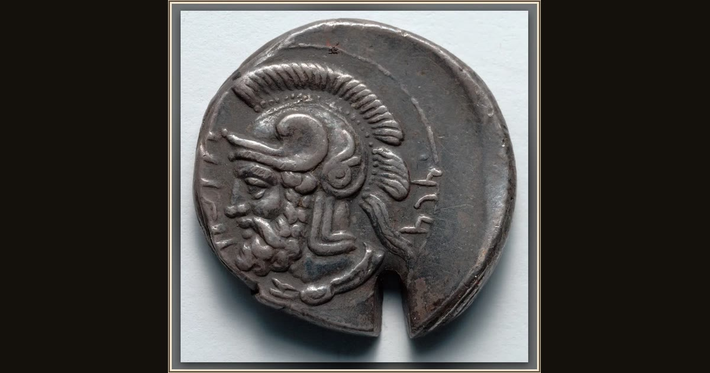

Stater: Baal (obverse); Head of Pharnabazos (reverse)
Iran, Achaemenid (550–330 BCE), minted at Tarsos (Kilikia) · 379–374 BCE · cma
The reverse of a silver stater struck at Tarsos, with a helmeted bearded head the museum identifies as Pharnabazos, the Persian satrap whose envoys came to Sparta seeking a fleet (8.6.1). Explore its place in Thucydides's History of the Peloponnesian War, Book